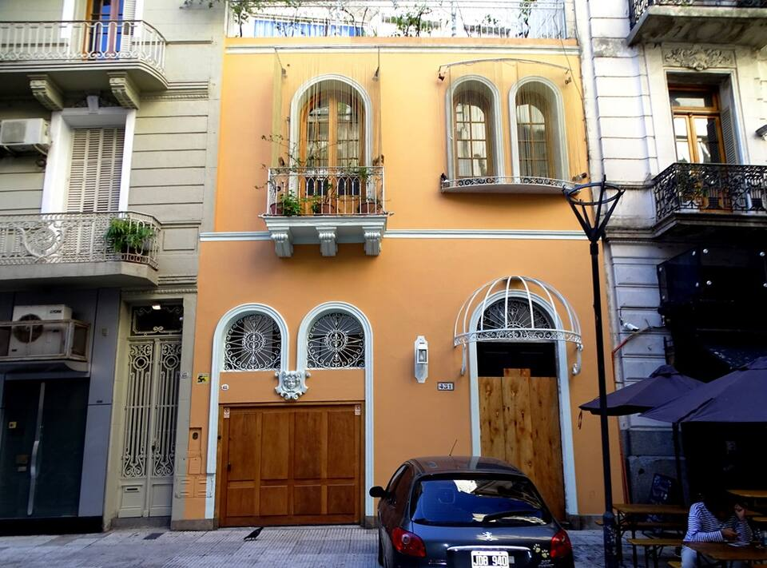
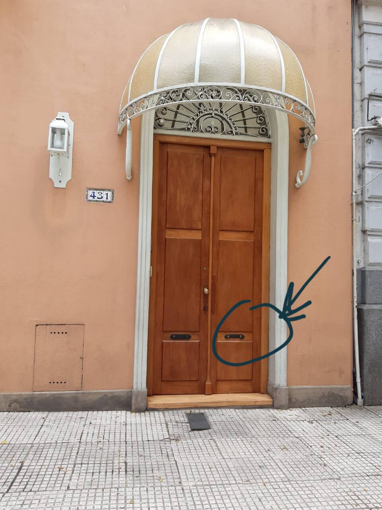

Check-inDesde 15 hs
Check-outHasta 11 hs
Guardá esta guía en tu pantalla de inicio
iPhone: tocá el ícono de compartir (⬆) en el navegador y elegí "Agregar a pantalla de inicio".
Android: tocá el menú (⋮) en Chrome y elegí "Agregar a pantalla de inicio" o "Instalar app".
Cómo ingresar
El edificio es de acceso directo, sin recepción — así llegás sin vueltas.
1
Llegá a Tres Sargentos 431
Es la puerta grande de madera, con el toldo curvo blanco y dorado arriba. Esta es la fachada, para que la reconozcas fácil:

2
Tocá el timbre
Te van a recibir en la puerta y ayudar a instalarte en tu apartamento. Si no te contestan enseguida o tenés algún problema, escribinos por WhatsApp.
3
Al irte, devolvé las llaves en el buzón
Es el mismo que se ve marcado en esta foto, a la derecha de la puerta:

Ubicación
Tres Sargentos 431, Buenos Aires.
Abrir en Google Maps